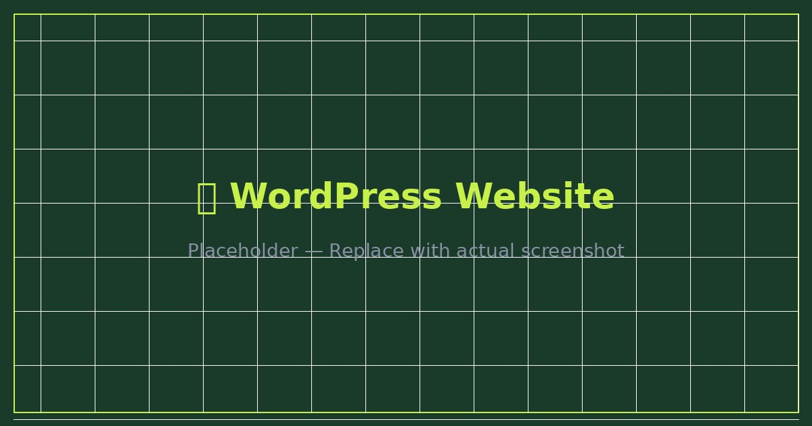
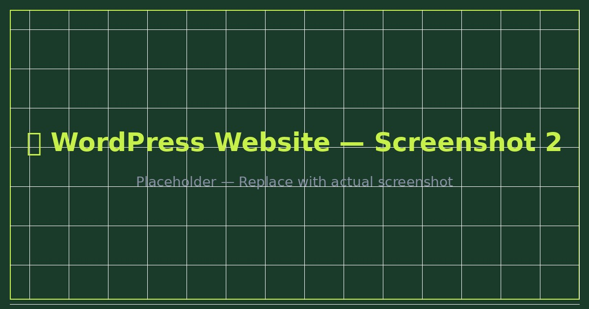

Developed a fully responsive WordPress business website using Elementor, including custom page design, on-page SEO, performance optimization, and integrated analytics tracking.

The client needed a professional business website that clearly communicated their services, built trust with visitors, and ranked well in search engines. The existing online presence was outdated and not mobile-friendly.
The new site was designed with a mobile-first approach, fast load times, and a clean structure that made both users and search engines happy. Analytics and Meta Pixel were integrated for ongoing tracking.
